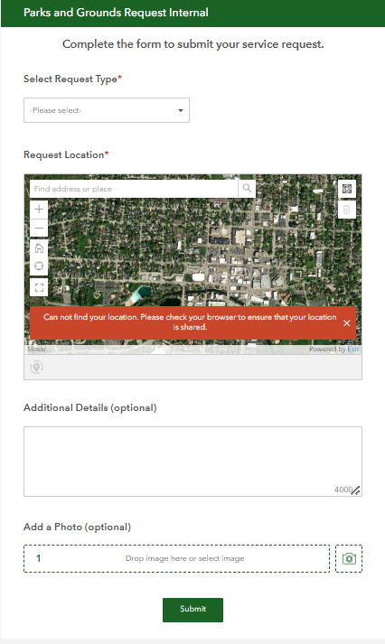
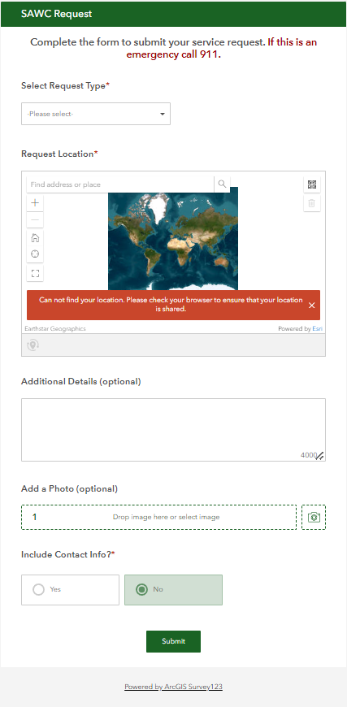
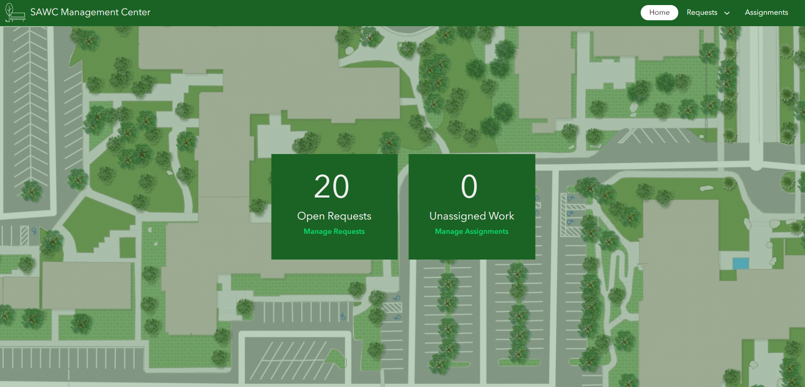
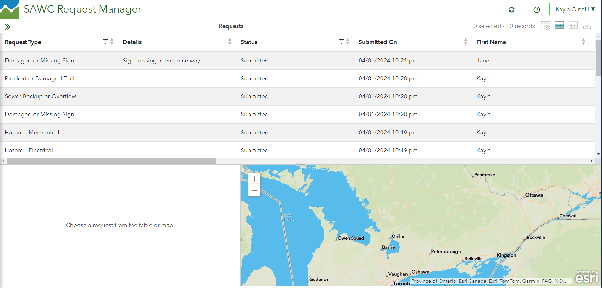
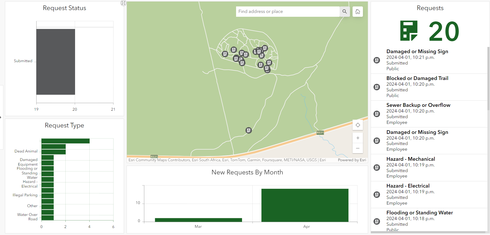

For this solution, we adapted part of the Parks and Grounds Management pre-made solutions, while adding a reporting components. The major components we used for this solution was: 2 Surveys, a dashboard, a management center. In addition to the pre-made solutions, we added on Jupyter Notebook to create and send reports of the data collected.
The first component of this solution was the surveys to collect the request and relevant information. There were two surveys designed for this: one internal and one external. The internal survey was designed for staff to go and inspect an area of piece of equipment. This would require a staff member to be logged into their AGOL account, and it would automatically log their name and email
The external survey was designed for anyone to fill in and is designed similarly to the internal solution. It has a reduced number of select options to report an incident and gives the user the option to add in their contact details.
Both surveys then had an accompanying feature layer in ArcGIS Online, as well as they were combined into one feature layer: Requests. This Request layer was the referenced layer in the other components of the solution.
A downfall with the surveys was that they were already published when deploying the solution. This made editing them difficult. If given more time, new surveys with new questions would need to be made to match a clients need. Adding questions to the exisitng survey and republishing it caused an error.
The data from the surveys were also linked to the management center. This is where an admin or operations lead would log in and assign the open tasks to an employee to either inspect or fix. Upon the home page, you are given the option to see the open requests (manage requests) or see the unassigned work (manage assignments). The Management Center can be found here.
This aspect of the solution would be very beneficial to provide a quick overview of tasks. Unfortunately, after the solution was created and data added, the management center would often disconnect from the data and provide an error code instead of the open requests.
The request is a dashboard that provides a snapshot of open requests, who is assigned to them and any relevant details of the request. Managers are able to click on specific requests in the table and add more details to them if needed. The Request Manager can be found here.
The request is a dashboard that provides a snapshot of open requests, where they are on the map, the request type and when the requests were submitted. This is a good visual aid to see how many requests are still open and in what categories are they being reported. This is linked in the Management center, on the navigation bar, under requests and monitor. The Request Dashboard can be found here.
The downside here is I was not able to change the default map extent from my location to the location of where your requests are. You have to search the location of requests in the map extent for the dashboard to show the relevant information.
In this solution, we've utilized Survey123-collected data to generate reports via ArcGIS Online Jupyter Notebook. By leveraging Task Automator within Jupyter Notebook, we're able to schedule automated code runs according to user preferences whether it's every minute, day, week, or month. As part of our solution, users can submit requests through Survey123, including a field indicating the priority level of their request, categorized as critical, moderate, or low. With this data in place, we could configure Task Automator to generate reports accordingly; daily for critical requests, weekly for moderate ones, and monthly for low-priority requests.
The AGOL solution overall is well designed and would meet the needs of our problem statement. A few issues that arose while working with this solution included the surveys being difficult to add new questions to, as well as the Management Dashboard being unreliable. If given more time, these issues could be addressed and fixed. As a proof of concept, the solution designed worked well and we believe could be further enhanced to meet the needs set out in our problem statement.